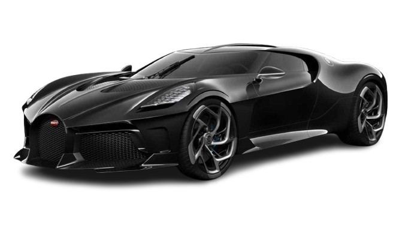
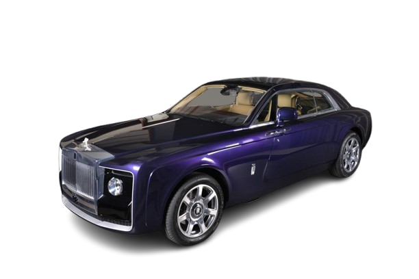
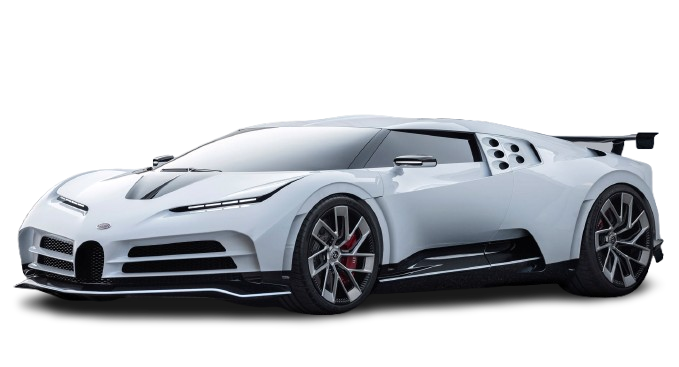

Los Coches Más Caros de la Historia
Descubre los vehículos más exclusivos y valiosos jamás fabricados.
Bugatti La Voiture Noire
18.700.000 $
El coche más caro de la historia. Un гиперкар único basado en el Bugatti Chiron, construido para un cliente anónimo.

Rolls-Royce Sweptail
13.000.000 $
Un modèle única creado a medida para un coleccionista. Combina elegancia clásica con diseño moderno.

Bugatti Centodieci
9.500.000 $
Limitado a solo 10 unidades, este гиперкар rinde homenaje al Bugatti EB110.

McLaren F1 LM
9.000.000 $
Uno de los McLaren F1 más exclusivos. Solo se fabricaron 6 unidades.

Pagani Zonda Cinque
7.000.000 $
Solo se fabricaron 5 unidades. Uno de los Pagani más extremos jamás creados.

Ferrari 250 GTO
70.000.000 $
El Ferrari más caro subastado. Solo se fabricaron 36 unidades en 1962.